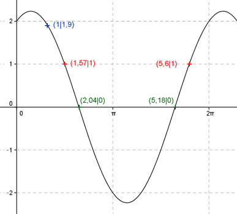
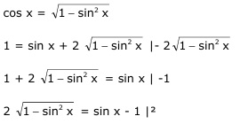
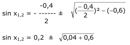

Aufgabe 217 Ergänzen Sie die Wertetabelle für x zwischen 0 und 2π: y = sin x + 2 cos x x 1 1,57 oder 5,6 y 1,9 1 Amplitude = 2,236 (Berechnung siehe unten), Periode = 2π Berechnung der Nullstellen: 0 = sin x + 2 cos x |-2cos x -2 cos x = sin x |:cos x sin x sin x ------- = - 2 mit ------- = tan x cos x cos x tan x = - 2 --> x = arc tan - 2 = -1,1 oder -63° gerundet, liegt nicht im Bereich zwischen 0 und 2π. x1 liegt bei (π - 1,1) = 2,04 oder 116,9°. x2 liegt bei (2π - 1,1) = 5,18 oder 296,8°. Berechnung der Amplitude A: Sie tritt an den Stellen x = (117° + 90°) = 207° oder 3,61 oder bei (207 - 180°) = 27° oder 0,47 auf. A = f(27°, 207°) = sin 27° + 2 cos 27° = |sin 207° + 2 cos 207°| = 2,236.  Funktionswert an einer Stelle x ermitteln: 1 * 180° x = 1 oder ---------- = 57,3° π y = f(1) = sin 1 + 2 cos 1 = sin 57,3° + 2 cos 57,3° = 0,84 + 2 * 0,54 = 1,9 gerundet. Berechnung der x-Werte für y = f(x) = 1 f(x) = 1 eingesetzt, existiert zwischen 0 und π bzw. 0° und 180° und zwischen π und 2π bzw. 180° und 360° (siehe Graph). 1 = sin x + 2 cos x  4 (1 - sin2 x) = sin2 x - 2 sin x + 1 4 - 4 sin2 x = sin2 x - 2 sin x + 1 |+4 sin2 x 4 = 5 sin2 x - 2 sin x + 1 |-4 5 sin2 x - 2 sin x - 3 = 0 |:5 sin2 x - 0,4 sin x - 0,6 = 0 p,q - Formel: p = -0,4 ; q = -0,6  sin x1,2 = 0,2 ± 0,8 sin x1 = 1 --> x1 = arc sin 1 = 1,57 gerundet = π/2 sin x2 = -0,6 --> x2 = arc sin - 0,6 = -0,64 Weil zwischendurch quadriert wurde, ist eine Probe nötig. Probe: Für x1: sin 1,57 + 2 cos 1,57 = 0,8 ? 1 - 0 = 1 Lösung Für x2: sin - 0,64 + 2 cos - 0,64 = 0,8 ? -0,6 + 2 * 0,8 = 1 Lösung Die Funktionswerte liegen gleich weit von der Amplitudenstelle entfernt: x1 = π/2 = 1,57 gerundet oder 90° x2 = 1,57 + 2 * (3,61 - 1,57) = 5,65 oder 323,7° gerundet.